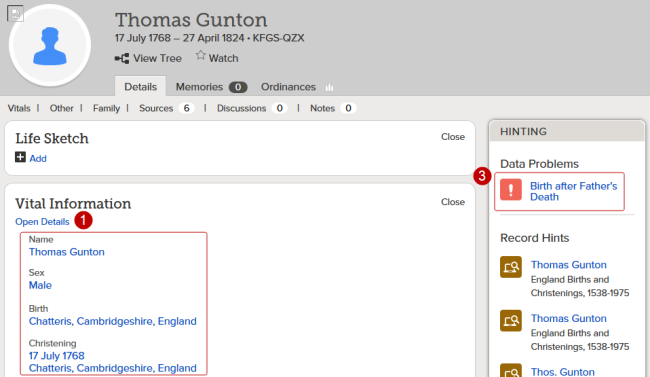

Prepare Names for Temple Work
[Your ancestors'] hearts are bound to you. Their hope is in your hands.
— Henry B. Eyring
Who can I do temple work for?
You can do temple work for the following deceased relatives:
- Immediate family members.
- Direct-line ancestors (parents, grandparents, great-grandparents, and so on, and their families).
- Biological, adoptive, and foster family lines connected to your family.
- Collateral family lines (uncles, aunts, cousins, and their families).
- Descendants of your ancestors.
- Your own descendants.
- Possible ancestors (individuals who have a probable family relationship that cannot be verified because the records are inadequate, such as those who have the same last name and resided in the same area as your known ancestors).
You should only do temple work for individuals in the following groups if you are related to them:
- Famous people.
- Those gathered from unapproved extraction projects.
- Jewish Holocaust victims. Temple work may only be done for this group under the following conditions:
- You are an immediate family member of the deceased (defined as a parent, spouse, child or sibling).
-OR-
- You have permission of all living immediate family members.
-OR-
- You have the permission of the closest living relative if no immediate family members are living.
If your deceased family member was born less than 110 years ago:
- The person must have been deceased for at least one year.
- You must either be one of the closest living relatives*, or you must obtain permission from one of the closest living relatives. Verbal approval is acceptable. Family members should work together to determine when the ordinances will be done and who will do them.
*Closest living relatives are defined as undivorced spouse (the spouse to whom the individual was married when he or she died), an adult child, a parent, or a sibling.
How do you know if a name is ready for temple work?

 Click to hide all images.Click to show all images.
Click to hide all images.Click to show all images.
- Look at the vital information. The record should have a full name (typically the name given at birth). It should also have at least a date and location for a birth or christening.
This image is just an example. To follow the steps in this document, go to Family Tree.

- Verify whether the person lived to be at least 8 years old (for instance, by checking census records). If a child died before age 8, only sealing to parents is needed.
- Check the Hinting box for any data problems (indicated by a icon). Resolve these problems before proceeding.
- Scroll to the Family section and check the family relationships. If you see anything that’s obviously wrong, like duplicate spouses or parents, you’ll want to resolve those problems first or move on to another record.
- Search for duplicate records, and carefully merge any duplicates found. See Resolve Duplicates for more information.
Once you've carefully prepared a name for temple work, the next step is to reserve the name.